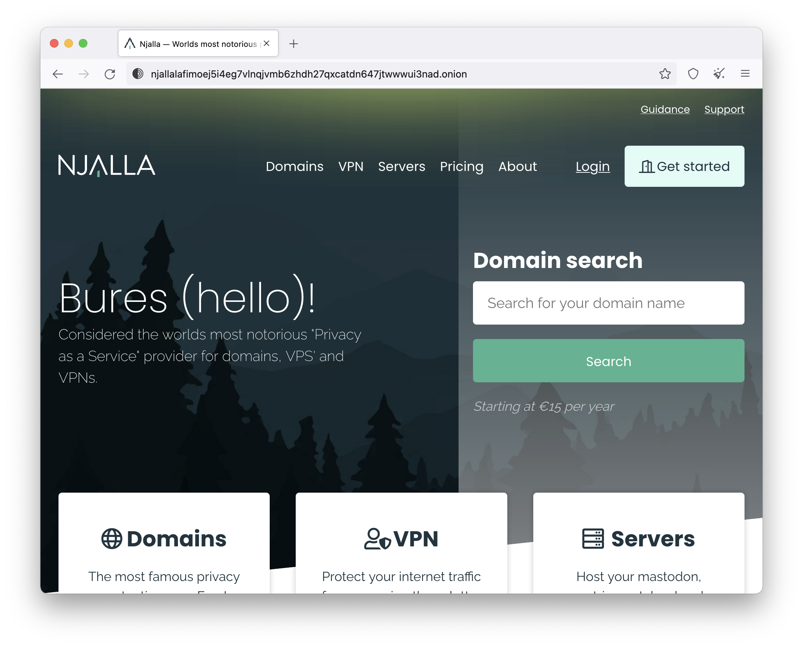
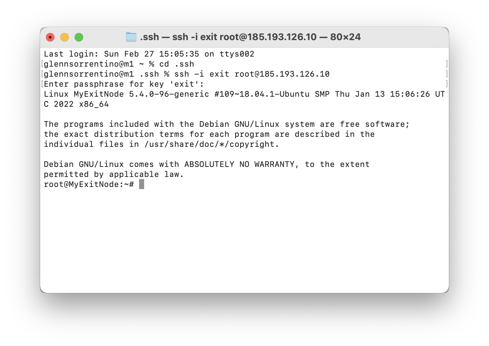
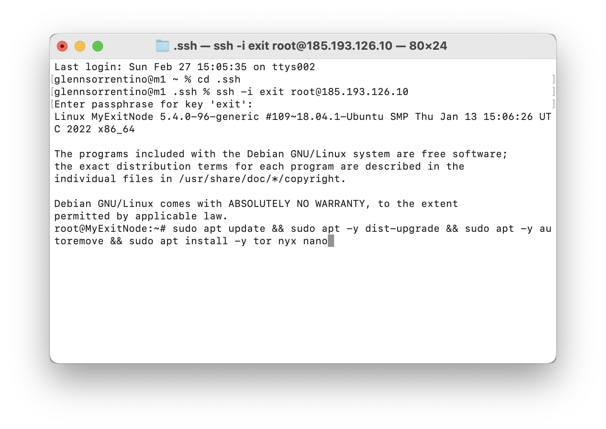
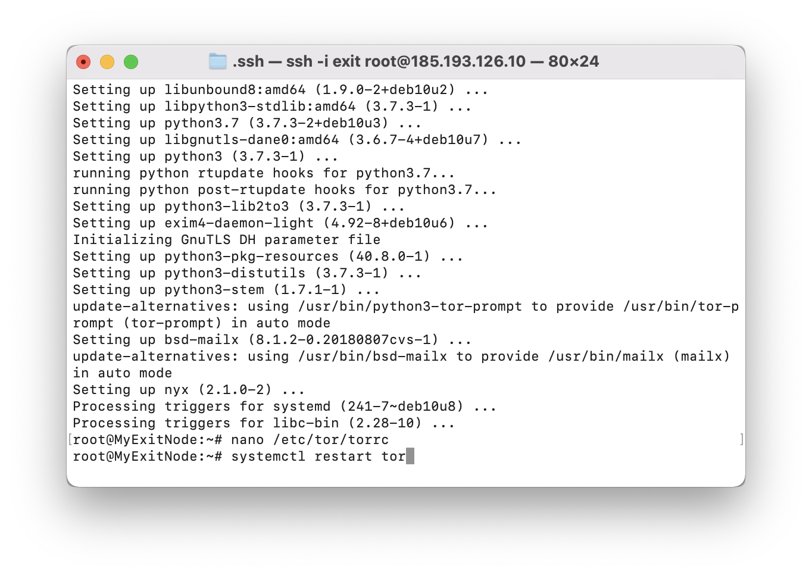
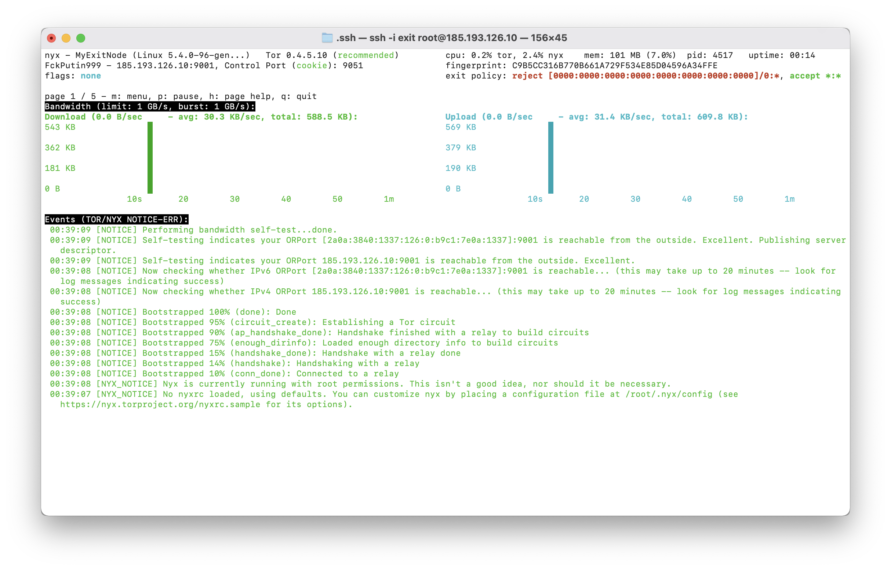
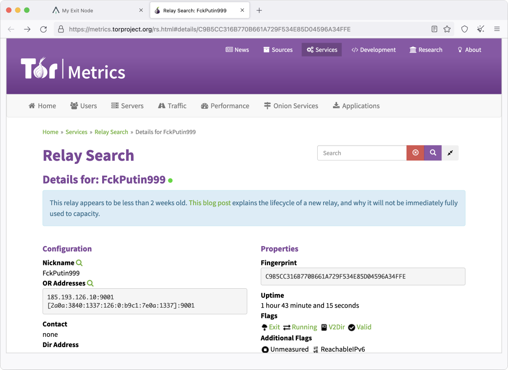

Running a Tor exit node is one of the most important things volunteers can do to strengthen the Tor network. It can also put them at risk if running it from home, since it could appear that someone on their network is visiting sites that they may not be visiting. Remember when Tr*mp wanted to get the IP addresses of activists that visited an anti-Tr*mp website? Maybe an exit operator visited the site, maybe they didn't, but it doesn't matter because it *looks* like they did. Before you consider running an exit relay, read these tips from the Tor Project.
I'll show you how to get an exit node running without revealing any personal information about yourself.
What you'll need:
- Tor Browser
- A trusted VPN
- 15€ in Zcash
- An email address
- A Terminal app
Step 1: Get a VPS
In Tor Browser, go to https://njal.la and buy a new virtual private server (VPS) using Zcash. Note that Njalla has an onion address available. If you need a new email account that isn't associated with your real identity, you can create one on Protonmail, which also has an onion address available.
Step 2: Log In
Make sure your VPN is running and open your Terminal app and log in to your new server.
Step 3: Install Software
Update the system and install the software we'll need:
apt update && apt -y dist-upgrade && apt -y autoremove && apt install -y tor nyx nano
Step 4: Configure your relay
Now we'll get the exit setup. Edit the torrc file:
nano /etc/tor/torrc
Uncomment the following lines:
RunAsDaemon 1
ControlPort 9051
CookieAuthentication 1
ORPort 9001
Nickname yournickname
Add these lines to the end of the file:
ExitPolicy accept *:*
ExitPolicy reject private:* # Block private IPv4
ExitPolicy accept6 *:*
ExitPolicy reject6 [FC00::]/7:* # Block private IPv6
ExitPolicy reject6 [FE80::]/10:* # Block link-local IPv6
ExitPolicy reject6 [2002::]/16:* # Block 6to4 addresses
IPv6Exit 1
Save and exit.
Step 5: Restart Tor
systemctl restart tor
Step 6. Open Nyx
Open Nyx to see your relay's activity!
nyx
Give it some time and then check atlas.torproject.org for your relay.
🥳 Congratulations! You just added a trusted, private exit node to the Tor network!
Special thanks to Nicholas Merrill for his help with this article!